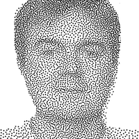

Frank NIELSEN
PhD'96, Habilitation'06
Sony CSL, Fellow
Short biography
My motto: "Invariance is the only constant in change!"
|
- Research interests:
- Information geometry and computational geometry
- Information theory and mathematical statistics
- Dissimilarities, distances, divergences, and losses
- Clustering (centroids and centers), deep learning and machine learning
- Visual computing and computational photography
- Geometric optimization and combinatorial optimization
- Publications, preprints, and notes
- Slides and video
- Geometric Science of Information (GSI)
- Books and edited books
- Journal editorial boards and conference/workshop/event organizations
Forthcoming events and activities:
- Blog
- Tweets
- Research cards
|